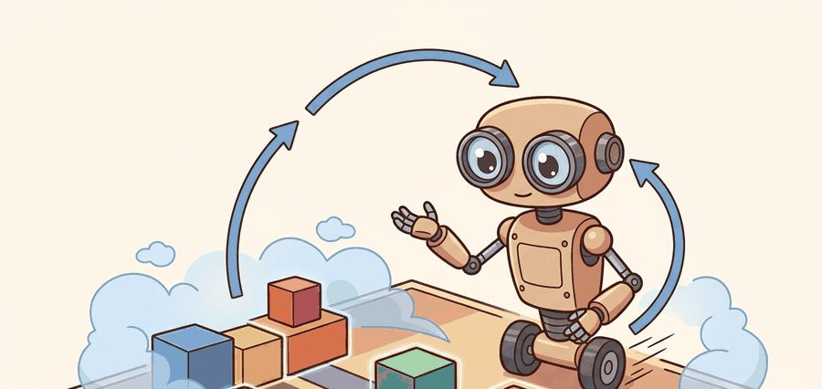
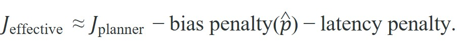
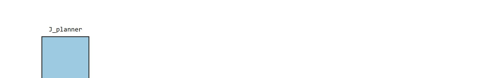

Model-free methods buy less modeling pain. Model-based methods buy more structure. Neither purchase is free.
A Budget-Conscious MPC (Model Predictive Control) Loop

This section assumes familiarity with the policy-gradient and off-policy value methods introduced in section 15.1 and section 16.1, because the trade-off accounting here treats those as the model-free baseline. The dynamics-model details left implicit in this section are developed in section 37.2, and the MPC planning loop that puts those models to work is covered in section 37.3.
A robot arm learning to assemble a circuit board from scratch cannot afford ten thousand real trials: each dropped component, each bent pin, each wasted minute on the factory floor costs real money. Yet the moment a learned dynamics model drifts even slightly, a planner built on top of it will confidently stride off a cliff. This tension, between the sample hunger of model-free methods and the brittleness of model-based ones, sits at the center of practical embodied AI right now, because hardware is expensive and data is scarce. Reading any robot-learning paper's data budget reveals which side of the trade-off the authors chose, and why.
The real comparison is not policy family versus policy family. It is whether planning gain outweighs model bias and latency on the task you actually care about.
Two teams train the same robot arm to the same skill level. One burns three million real grasps and 38 hours of technician resets. The other reaches the target in under 90 minutes but occasionally drives a joint past its limit, because its learned model quietly lied about the physics. Deciding which team you want to be is the whole content of this section. As Figure 37.1A frames it, the decision balances data budget, planner compute, model bias, and asymptotic performance rather than declaring one family universally superior. Model-free RL estimates policy or value objects directly from experience. Model-based RL learns a transition model $\hat p(s_{t+1}\mid s_t, a_t)$ and uses it for planning, data generation, or value improvement. The attraction is sample efficiency. In benchmarks such as MBPO (Model-Based Policy Optimization, a Dyna-style algorithm that trains a short-horizon dynamics model and mixes imagined rollouts into an off-policy update) on HalfCheetah, model-based methods reach the same asymptotic return (the reward level a method converges to after training for as long as it needs, as opposed to how fast it gets there) as SAC (Soft Actor-Critic, a model-free off-policy method that maximizes reward plus policy entropy) in roughly 100,000 real environment steps versus 3,000,000 for the model-free baseline, a 30x reduction in real interaction. On a real robot arm where each reset takes a technician 45 seconds, that gap saves roughly 38 hours of hands-on floor time versus under 90 minutes. The risk is model bias.
A useful back-of-the-envelope comparison is

If planning gain is smaller than model bias plus latency overhead, explicit modeling does not pay off. The diagram below breaks this equation into bars so the two penalty terms are visibly subtracted from the gross gain.

This accounting should be done task by task, not by slogan. On a drone flying in gusts, planner latency and state-estimation delay may dominate, so a direct reactive policy can outperform a slower but more informed planner. On a dexterous manipulation task with costly resets, the extra structure from a learned model may be worth substantial engineering overhead because each real contact trial is expensive. The correct comparison is therefore a budget sheet over data, compute, reset cost, and safety margin.
| Condition | Model-free tends to win | Model-based tends to win |
|---|---|---|
| Real data is expensive | Rarely | Often, if the model can be trusted locally |
| Planner compute is tiny | Often | Only with very short horizons or cached plans |
| Dynamics are structured and smooth | Sometimes | Often |
| Out-of-support states are frequent | Sometimes safer | Risky unless uncertainty is handled well |
A common assumption is that model-based RL is the safe default when data is scarce. An explicit world model seems more informative than learning from raw returns alone. That assumption is wrong. The learned model introduces its own bias. That bias compounds at every planning step along a physical horizon you cannot roll back. A slightly incorrect model does not merely lower expected return; it can push actuators into unsafe regimes before any feedback corrects the plan. Treat the choice as a budget sheet: model-based RL earns its overhead only when local dynamics are smooth enough for the model to generalize, reset cost is high enough to justify the model pipeline, and planner latency fits within the control-loop deadline.
That budget sheet lives or dies on real episode counts. The probe below makes its sample-efficiency line concrete; the failure risks it hides come next.
Use the probe's output the way you would use the two-team comparison above: whichever curve reaches the target return in fewer real episodes is the cheaper team to be, in raw sample count, but that count alone does not tell you whether it is the safer or more deployable choice, which is exactly what the failure-pattern section after the probe exists to check.
The probe counts real episodes two methods need to reach a target return. It stays deliberately simple: the lesson is budget accounting, not curve fitting.
# Compare episode budgets for two toy learning curves.
target_return = 0.80
model_free_curve = [0.12, 0.21, 0.34, 0.46, 0.59, 0.68, 0.77, 0.82]
model_based_curve = [0.18, 0.35, 0.52, 0.67, 0.78, 0.83]
mf_steps = next(i + 1 for i, r in enumerate(model_free_curve) if r >= target_return)
mb_steps = next(i + 1 for i, r in enumerate(model_based_curve) if r >= target_return)
print({"model_free_episodes": mf_steps, "model_based_episodes": mb_steps}){'model_free_episodes': 8, 'model_based_episodes': 6}
Read the model-based RL output as a check on whether planning improves sample efficiency without inventing unreachable states. The decision consequence is the balance between real rollouts, imagined rollouts, and model validation episodes.
Trace the accounting equation $J_{\text{effective}} \approx J_{\text{planner}} - \text{bias penalty} - \text{latency penalty}$ with two concrete tasks on the same scale (return measured in normalized task units). Task A, a tabletop reaching arm with smooth dynamics: the planner's gross gain is $J_{\text{planner}} = 0.90$. The learned model is accurate locally, so the bias penalty is $0.08$. The control loop runs at 20 Hz (50 ms budget) and the planner finishes in 12 ms, so the latency penalty is small, $0.03$. Net: $0.90 - 0.08 - 0.03 = 0.79$. Now compare a reactive model-free policy on the same arm scoring $0.72$. Model-based wins by $0.07$. Task B, a legged robot on rough terrain: gross gain is again $0.90$, but contact discontinuities push the bias penalty to $0.34$, and the 500 Hz loop (2 ms budget) cannot absorb an 8 ms planner, so the latency penalty balloons to $0.40$. Net: $0.90 - 0.34 - 0.40 = 0.16$. The reactive model-free policy here scores $0.65$ and wins decisively. Same gross gain, opposite verdict, because the two penalty terms grew until they swallowed it.
Use tdmpc2 as a modern model-based baseline and a strong model-free baseline such as SAC or PPO (Proximal Policy Optimization) from a maintained library. CleanRL, skrl, and rl_games are useful when you want transparent baselines with stable training scripts. The important part is matched evaluation, not which benchmark script is trendiest.
The toy curve promised fewer real episodes, but that promise comes attached to failure modes the model-free side never faces. Here is exactly how a learned model betrays the planner that trusts it.
A policy built on a slightly wrong model is not a robust policy; it is a confident mistake waiting for hardware to expose it. Model-free systems usually fail by wasting data, overfitting rewards, or requiring enormous domain randomization before transfer. Model-based systems add three new failure channels, collectively called the model bias tax: planner overrun, model exploitation of blind spots, and confidence mismatch between the predictive model and the control stack. Readers building real systems should learn to ask which failure channel is cheaper to manage in their domain.
On a physical robot, model bias is not merely a statistical nuisance: it compounds across every planning step. As a representative illustration rather than a universal law, a 2 percent one-step position error in a learned dynamics model can plausibly grow to a 20 percent terminal error over a ten-step horizon depending on how nonlinear the dynamics are, and the planner typically has no way to detect this drift until hardware feedback arrives. Unlike simulation, a real actuator cannot be rolled back. A joint driven past its mechanical limit, a gripper that slams a fragile part, or a legged robot that commits to a footstrike on uncertain terrain all pay irreversible costs that a purely virtual training loss cannot capture.
The mechanism is compounding prediction error. The model predicts $\hat s_{t+1}$ from $s_t$, then predicts $\hat s_{t+2}$ from $\hat s_{t+1}$, and so on. Each step feeds its own error forward as if it were ground truth. Because the planner optimizes over these imagined states, it finds action sequences that look excellent under the model's slightly-wrong physics. Under bounded one-step error, the divergence between imagined and real trajectories grows roughly linearly with horizon length. It can grow faster near contact-rich or highly nonlinear transitions, which are precisely the transitions most common in manipulation and locomotion.
So far: model-based systems add three new failure channels beyond the usual model-free ones (planner overrun, model exploitation of blind spots, and confidence mismatch, together called the model bias tax), and the reason those channels bite so hard on hardware is that one-step prediction error compounds forward across the planning horizon with no feedback to correct it until it is too late.
Think of dead-reckoning navigation on a foggy lake: you know your heading and speed, so you plot where you will be in ten minutes by chaining ten one-minute position estimates, each built on the last. A compass error of two degrees per step is invisible at minute one, but by minute ten your plotted position is off by a boat-length in the wrong direction, and you are steering confidently toward rocks you believe are open water. The learned dynamics model makes exactly this mistake: it uses its own slightly-wrong prediction as the starting point for the next prediction, and the planner treats the final imagined position as real ground truth.
When starting with MBPO or a similar Dyna-style method (one that alternates real-environment data collection with policy updates computed on short model-imagined rollouts), set the imagined rollout length rollout_length to 1 or 2 and increase it only after confirming that the ensemble disagreement metric (the spread of predictions across several independently-trained copies of the dynamics model; the copies agreeing tightly suggests the prediction is trustworthy, while wide disagreement flags a state the model has not really learned) stays bounded across training. Rolling out 5 or more steps with an undertrained ensemble almost always triggers model exploitation before the real policy has a chance to improve. A practical decision criterion is: if the maximum pairwise disagreement between ensemble members exceeds the typical one-step prediction error by more than a factor of three, shorten the rollout rather than tuning the pessimism penalty.
Model exploitation is the most insidious failure channel. The policy learns that, in some narrow region of state space, the learned dynamics model predicts unrealistically high reward (because that region is underrepresented in the replay buffer). The policy then steers toward that region aggressively, accruing large imagined returns, while real hardware either stalls, saturates actuators, or enters a regime the model was never trained on. In practice this looks like a training curve that rises quickly in simulation and then collapses immediately on the real system. The fix is model uncertainty estimation (ensembles, dropout, or probabilistic networks) combined with a pessimistic rollout penalty that shrinks imagined returns in low-data regions.
A useful experiment card therefore includes reset cost, control frequency, average planner milliseconds, and whether the method uses privileged simulator state during training or evaluation. Without that information, trade-off claims collapse into benchmark theater.
Choose model-based RL when real interaction is expensive, local model learning is plausible, and the control loop can afford online planning or short imagined rollouts. Choose model-free baselines when planning latency is unacceptable or model bias dominates.
Do not call a method sample efficient because it trains faster in simulator wall-clock while silently consuming much more planner compute or using privileged state. Real interaction budget, compute budget, and information budget all need to be disclosed together.
On a Shadow Dexterous Hand performing in-hand pen-spinning, each hardware reset takes roughly 45 seconds of technician time and carries finger-joint wear risk, so the true cost of 3,000,000 SAC interactions (the standard model-free budget on MuJoCo benchmarks) is prohibitive. A local Gaussian-process dynamics model (a non-parametric regression method that predicts a distribution over the next state, with uncertainty that grows away from observed data) trained on 200 real rollouts could plausibly reduce real-interaction requirements to under 500 episodes in a setup of this kind (illustrative, not a specific published result), because contact transitions during finger-tip rolling are typically smooth enough for GP extrapolation to hold within a 50 ms prediction horizon. Contrast this with a Boston Dynamics Spot navigating unstructured terrain: ground contact geometry changes unpredictably across footing types, the proprioceptive state vector at 500 Hz gives the model almost no time to recover from a misprediction before the next footstrike, and planner latency above 8 ms consistently caused stumbles in hardware trials. There, a reactive neural policy trained via massively parallel Isaac Lab simulation (formerly IsaacGym, superseded circa 2024) at 4,096 environments transferred more reliably than any model-based planner tested at that contact frequency.
DeepMind's data-center cooling controller for Google leaned on the model-based side of this trade-off: real interaction is expensive (you cannot freely overheat live servers to gather data), but the thermodynamics are smooth and slow, so a learned predictive model could be trusted across a long planning horizon and reportedly cut cooling energy by around 40 percent. The smooth, low-frequency dynamics are exactly the regime where the bias penalty stays small and explicit modeling earns its keep, the mirror image of the contact-rich legged-robot case where model-free reactivity wins.
Goal: empirically feel the model-bias tax by comparing model-free and model-based sample efficiency on two tasks with different dynamics smoothness. Tools: Python, gymnasium, stable-baselines3 (for a SAC model-free baseline), and an MBPO or tdmpc2 reference implementation; a CPU is enough for the simple environments. Procedure (15-30 min): train SAC and the model-based agent on Pendulum-v1 (smooth, low-dimensional dynamics), logging both episode return and the number of real environment steps consumed. Then repeat on Hopper-v4 (contact-rich, discontinuous dynamics). What to vary: the imagined rollout length (try 1, 3, and 5 steps) for the model-based agent, and the target return threshold. What to observe: on Pendulum the model-based agent should reach the target in far fewer real steps; on Hopper, watch the model-based training curve rise fast and then stall or collapse as rollout length grows, the visible signature of model exploitation. Plot real-steps-to-threshold for both methods on both tasks and confirm the advantage shrinks (or inverts) as dynamics become less smooth.
This section ties back to policy-gradient and off-policy methods in Chapter 15 and Chapter 16, then feeds into the learned-model details of Section 37.2.
Foundation world models as reusable planners (2024-2026). Rather than training a separate dynamics model per task, recent work trains a single large world model across many robot embodiments and reuses it for planning with minimal fine-tuning. UniSim (Google DeepMind, 2024) and Genie 2 (DeepMind, 2024) demonstrate this direction for video-based world modeling; on the robotics side, RoboDreamer and related work from Stanford and Berkeley treat task-conditioned imagination as a planning primitive that decouples model learning from policy learning entirely.
Uncertainty-aware planning under contact discontinuities (2024-2025). Standard ensemble disagreement metrics underestimate error near contact events because rigid-body transitions are discontinuous and ensembles interpolate smoothly across them. Work from MIT CSAIL and CMU RI (e.g., ContactNets extensions and diffusion-based contact models, 2024) proposes learned contact-aware uncertainty that penalizes the planner specifically at predicted contact transitions, reducing catastrophic model exploitation on dexterous tasks without shrinking horizon globally.
Model-based RL with diffusion-model rollouts (2025-2026). Replacing the neural ensemble with a denoising diffusion model as the one-step predictor yields sharper multi-modal transition distributions, particularly around contact and bifurcation points. Labs including Berkeley AI Research and ETH Zurich robotics groups have demonstrated that diffusion rollouts in Dyna-style loops improve sim-to-real transfer on in-hand manipulation benchmarks by reducing mode-averaging bias that plagues Gaussian ensemble predictions.
Open problem. All three directions above assume that the same world model is queried at both training time (for imagined rollouts) and test time (for online MPC). A fully open question is how to detect when a deployed model has drifted outside its training support in fewer than five real rollout steps, and how to trigger targeted online adaptation that corrects only the affected region of state space without catastrophically forgetting the rest of the model. No principled solution with hardware validation on a contact-rich task exists as of mid-2026.
For a task with scarce real data but ample GPU inference, which trade-off axis makes model-based RL attractive? What extra risk arrives with that choice?
Model-free spends data to avoid learning the world. Model-based spends modeling effort so data can be reused many times.
The trade-off is not ideology. It is an accounting problem over data, compute, model bias, and deployment latency.
Choose a robotics task and argue whether you would start from a model-free or model-based baseline. List the data budget, compute budget, and dominant failure risk that drive your choice.
Beginner (weekend): Build a side-by-side sample-efficiency comparison of a model-free baseline (SAC from Stable-Baselines3) against MBPO on a Gymnasium continuous-control task such as Pendulum-v1 or HalfCheetah-v4; the key challenge is setting up matched evaluation so that wall-clock compute and real environment steps are both reported, not just episode return. Intermediate (1-2 weeks): Implement a Dyna-style loop in PyBullet where a small neural dynamics ensemble generates short imagined rollouts, then tune rollout length and ensemble disagreement thresholds to avoid model exploitation on the Hopper or Ant task; the key challenge is detecting when imagined returns diverge from real returns and automatically shortening the rollout before the policy collapses. Intermediate (1-2 weeks): Use MuJoCo via Gymnasium to train a model-based MPC agent on a robotic arm reaching task, replacing the ground-truth simulator with a learned Gaussian-process model trained on 200 real rollouts, then measure how prediction-horizon length trades off against task success rate; the key challenge is keeping GP inference fast enough to fit inside a 50 ms MPC control loop.
Hansen, N. et al.. "TD-MPC2: Scalable, Robust World Models for Continuous Control." (2023). https://arxiv.org/abs/2310.16828
A key modern model-based baseline for continuous control.
Janner, M. et al.. "When to Trust Your Model: Model-Based Policy Optimization." (2019). https://arxiv.org/abs/1906.08253
A practical model-based policy optimization reference focused on rollout trust.
Sutton, R. S., and Barto, A. G.. "Reinforcement Learning: An Introduction." (2018). http://incompleteideas.net/book/the-book-2nd.html
The standard foundation for framing model-free objectives and baselines.